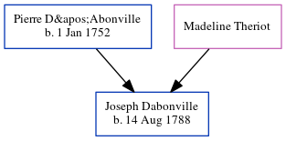

Joseph Dabonville 1788 -
[ Home ] | [ Calendar ] | [ Surnames Index ] | [ Census Index ] | [ Family History ]The child of Pierre D'Abonville and Madeline Theriot, Joseph Dabonville, the fifth times great-uncle of Michele Copp (née Phillips), was born in Haiti on Aug 14, 17881.he arrived in Charleston, South Carolina in 1832.
Parents
- Pierre was born on Jan 1, 1752
Citations
- Passenger and Immigration Lists Index, 1500s-1900s Online publication - Provo, UT, USA: The Generations Network, Inc., 2006.Original data - Filby, P. William, ed.. Passenger and Immigration Lists Index, 1500s-1900s. Farmington Hills, MI, USA: Gale Research, 2006.Original data: Filby, P. William, ed.. Passe
Family Tree
Generated by ged2site. Last updated on Jun 6, 2024